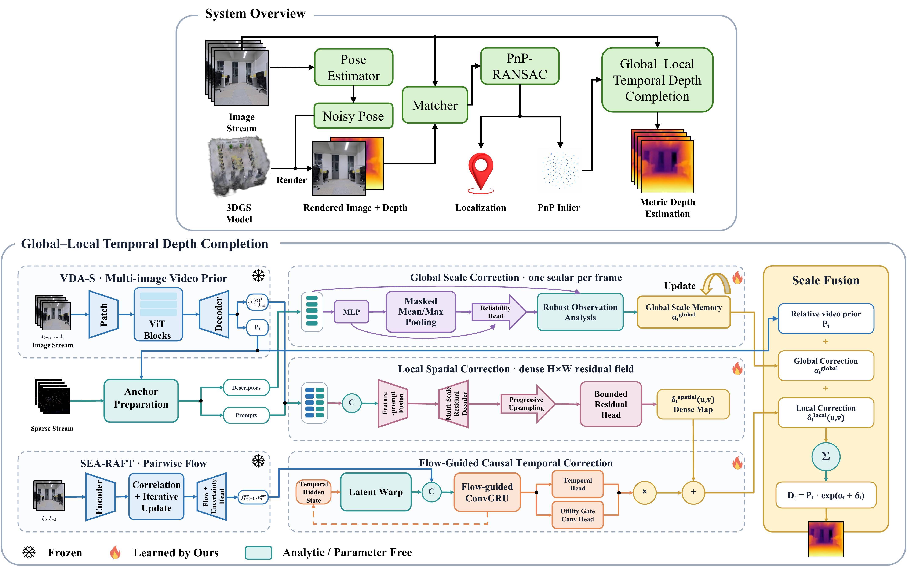
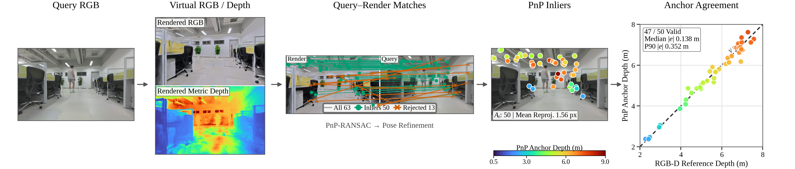
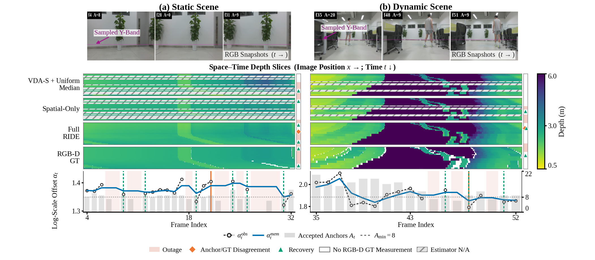

RIDE: Relocalization-Informed Depth Estimation
Turn pose correspondences into dense metric depth.
RIDE reuses PnP–RANSAC inliers from relocalization against a metric 3D Gaussian Splatting map as sparse depth anchors. A frozen video-depth prior is then calibrated at global, local, and temporal scales—without future frames.
Paper, code, and citation will be added when available.
Robot sequence
What you are seeing
RGB-D reference · aligned RGB · RIDE depth · metric point cloud and camera trajectory
RGB-D is displayed only for evaluation. It is not available to RIDE at inference.
01Metric 3DGS map
02PnP inlier anchors
03Global + local calibration
04Causal temporal memory
Core idea
One front end. Two useful outputs.
Render–match–PnP already creates geometrically verified 2D–3D correspondences for camera pose. RIDE keeps the inliers and converts their optical-axis coordinates into sparse metric depth anchors.
InputRGB window
SceneMetric 3DGS
Front endRender · match · PnP
ReuseInlier depth anchors
CalibrateGlobal · local · temporal
OutputDense metric depth
Only rendered depth at matched virtual pixels is sampled. The full rendered depth map is never treated as query-image depth.
Paper figure · Complete RIDE architecture

Quantitative evaluation
Results on the evaluated benchmark.
RIDE obtains the best point estimate among the methods in the current comparison table across all five reported metrics.
−31.0%
AbsRel vs. Any2Full
0.1617 → 0.1115
−41.5%
Temporal geometric error
vs. the best nonrecurrent baseline
Ablation
Each correction stage earns its place.
In the ablation study, the spatial branch substantially lowers frame-wise error; causal temporal correction further improves both depth accuracy and temporal consistency.
VariantAbsRelTGE
Global only
+ Spatial
+ Temporal
All methods use the same evaluation clips, valid-depth masks, and temporal masks. No method uses held-out anchors or dense ground truth for calibration.
Evidence
From verified matches to stable depth.
The interface is inspectable at the correspondence level, and the temporal behavior is evaluated across anchor outages and dynamic content.
Representative frame · Anchor interface

Qualitative temporal analysis

System boundary
Training and deployment use the same anchor interface.
Controlled anchor failures
Registered depth sampled at valid corners provides clean synthetic anchors. Dropout, clustering, background leakage, and perturbations simulate relocalization failures on public RGB-D video data.
Real PnP inliers
The same interface receives uncertain sparse anchors from the 3DGS relocalization front end. RGB-D is not used at inference.
Scope
What RIDE assumes.
RIDE assumes a metrically scaled 3DGS map and a usable relocalization front end. Performance depends on anchor quality and coverage, optical-flow reliability, and map completeness; recurrent states are reset at scene cuts or tracking failures. The reported gains are limited to the evaluated sequences.